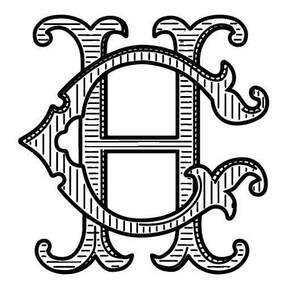

Trade Mark Journal No.2025/028 11 July 2025
UK00004228147 2 July 2025 (4,18,20,21,24,25,35)

- Class 4
- Candles; scented candles; fragranced candles; aromatherapy candles; wax candles and gel candles; wicks; wax; gel for candle-making; tallow; tapers; coloured wax chips; tealights; nightlight candles; candles in glass containers; lamp oils and fuel oils; lavender lamp oil; candles in ceramic and metal containers; parts and fittings for all the aforesaid.
- Class 18
- Umbrellas; wallets, purses; bags; handbags, holdalls, shoulder bags, rucksacks; dog coats; dog collars and leads; articles of clothing for animals; blankets and rugs for animals; harnesses for animals; umbrellas and parasols; canes; walking sticks; umbrella covers; wallets; leather and imitation leather wallets; pocket wallets; card wallets; pouches; card cases; key cases (leatherwear); key cases; attaché cases; purses; bags; leather and imitation leather bags; handbags; backpacks; school bags; school satchels; sling bags; cross body bags; shopping bags; garment bags; tote bags; beach bags; kit bags; gym bags; briefcases; travelling bags; travelling trunks; valises; suitcases; haversacks; net bags; garment bags; bags for campers; bags or cases for carrying animals; baby carriers; holdalls; shoulder bags; rucksacks; vanity cases; make up bags; toiletry bags; boxes of leather or leather board; leather or imitation leather belts; leather or imitation leather cords, twists and straps; dog coats; dog collars and leads; collars for animals; covers for animals; articles of clothing for animals; blankets and rugs for animals; harnesses for animals; fur skins; whips; saddlery.
- Class 20
- Beds for animals; dog baskets; beds for animals; dog baskets; baskets; furniture; cushions and pillows; seat cushions; armchairs; chairs; benches; deck chairs; easy chairs; settees; sofas; foot stools; stools; bassinets; mattresses (spring); beds; bedding; bedsteads of wood; clothing covers (wardrobes); wardrobes; chest of drawers; dressing tables; chests; hampers; crates; desks; filing cabinets; tables; television tables; sideboards; blinds; bead curtains for decorations; curtain holders; curtain poles, hooks, rods, rails, rings and tie backs; mirrors; mirror tiles; frames; picture frames; pedestals; plaques; wall plaques; statuettes and wickerwork; mannequins; statues of wood, wax, plaster or plastic; statuettes of wood, wax, plaster or plastic; wind chimes; works of art, of wood, plaster or plastic; coat hangers and coat stands and rails; hat stands; umbrella stands; clothes drying stands and airers; newspaper display stands; magazine racks; bottle racks; tea carts; tea trolleys; trays; dinner wagons; divans; fans for personal use; showcases; goods, namely items of furniture (not included in other classes) made from wood, rattan, cork, reed, cane, wicker, horn, bone, ivory, whalebone, shell, amber, mother-of-pearl, meerschaum and substitutes for all these materials, or of plastics; cushions.
- Class 21
- Household or kitchen utensils and containers (not of precious metal or coated therewith); non-electric household or kitchen utensils; ceramics, glassware, porcelain, earthenware; flasks and thermal insulated containers for beverages; tableware; tableware of porcelain and earthenware; bakeware including baking tins, cases, trays and sheets; kitchen mixers; cookware; basting brushes and basting spoons for kitchen use; ramekins; cake tins and molds; cauldrons; pans; frying pans; saucepans; platters; tureens; woks; basins; dinnerware; kitchenware, namely pots, pans, baking trays, knives, cutting boards, graters, mixing bowls, measuring cups, spatulas, whisks, ladles, tongs, blenders, food processors, toasters, colanders, strainers, rolling pins, serving spoons, peelers, and kitchen shears ovenware; stoneware; crockery; chinaware; dishes; butter dishes; cheese-dishes and cheese-dish covers; cups; mugs; plates; bowls; griddles; containers for food and for household and kitchen use; lunchboxes; storage jars; knife blocks; egg cups; jugs; chopsticks; beaters; blenders; bread bins; bread boards; chopping boards; carving boards; bottles; bottle openers; coasters; trays; wire brushes; cafetieres; carafes; decanters; skewers; meat grinders; mincers; colanders; sieves; spatulas; mixing spoons and service spoons; whisks; strainers; juice squeezers; garlic presses; melon ballers; scoops; recipe holders; cooking utensils; kitchen utensils; serving utensils; pressure cookers; funnels; gridirons (non-electric); coffee percolators and coffee pots; pots; sugar bowls; coal scuttles; beverage coolers; bottle coolers; cocktail shakers; cocktail stirrers; cocktail mixers; ice buckets; ice trays and molds; corkscrews; dish covers; shoe horns; fruit mashers; fruit pressers; potato mashers; tea sets; tea pots; tea infusers not of precious metals; unworked or semi-worked glass (except glass used in building); glassware; beer mugs; tumblers; glasses; wine glasses; coffee cups; coffee grinders; coffee filters; cutlery trays; dinner services, namely plates, dishes, cups and saucers; napkin holders; fitted picnic baskets; picnic utensils; picnicware; pewter ware for household and kitchen utensils; sprinklers; sieves; moulds; trays; cake stands; cutters for pastry; pastry brushes; rolling pins; cookie jars; wire strainers; tea kettles; trivets; trays; spice racks; coasters not of paper being leather and plastic; baskets of wicker and wood for household use; cleaning cloths and dish drying racks; towel and kitchen roll holders; cake servers; articles for cleaning purposes; steel wool; cleaning cloth; coffee cups; colanders; cookie cutters; cookie sheets; glass bowls; rolling pins; salt and pepper mills; sponges for household purposes; brushes (except paint brushes); household utensils, namely, pot and pan scrapers, spatulas, ladles and turners; mug trees; containers for soap; plastic serving trays; water bottles sold empty; goblets; towel holders and napkin holders; napkin rings; refuse containers; trash bins; receptacles for household refuse; oven gloves and oven mitts; mashers; potato mashers; breadbaskets; candelabra [candlesticks]; candlesticks and candle holders; flowerpots; holders for flowers and plants; ornaments made from china, ceramics, wood, earthenware and glass; vases made from glass, ceramics, earthenware and porcelain; watering cans; watering devices; ironing boards and ironing board covers; hair combs; cosmetic brushes; nail brushes; footwear brushes; toilet brushes, toilet cases, toilet utensils; toothbrushes, toothpicks; perfume burners, perfume sprayers and vaporizers; soap dispensers; boxes for dispensing paper towels; soap holders; parts and fittings for all the aforesaid goods.
- Class 24
- Fabrics; silk fabrics; fabrics for textile use; textiles; bed linen; blankets; quilts; throws; bed linen; duvets; duvet covers; bed blankets; bed cloths; bed covers; bed sheets; bedspreads; eider downs; mattress covers; pillow shams; pillow cases; chair covers; cushion covers; bath linen; face towels; towels; bath towels; beach towels; tea towels; flannels; linen; household linen; table linen; table linen; table covers; table cloths; table napkins; table mats; table runners; place mats (textile); serviettes (textile); coasters; curtains of textile or plastic; lap rugs; travelling rugs; upholstery (fabrics); wall hangings; furniture coverings; flags; handkerchiefs; shower curtains; sleeping bags for camping.
- Class 25
- Articles of clothing; jackets; blazers; gilets; waistcoats; jumpers; shirts; blouses; tops; underwear; socks; leg warmers; hosiery including tights; trousers; skirts; shorts; belts; tee-shirts; polo-shirts; sweatshirts; hooded sweatshirts; jogging bottoms; articles of clothing for sportswear and leisurewear; articles of clothing for equestrian use; articles of clothing for hunting; footwear; headgear, including hats and caps.
- Class 35
- Retail services, mail order retail services, online retail services and wholesale services connected with the sale of articles of clothing, footwear, headwear, eyewear, eyewear accessories, bags, vanity cases, make up bags, umbrellas, purses, wallets, cases, cases for electronic devices, fashion accessories, jewellery, watches, candles and scents, perfumes, fragrances, essential oils, toiletries, cosmetics, beds and blankets for animals, bags for animals, dog baskets, homeware, household and kitchen utensils, glassware, porcelain and earthenware, rugs, carpets, mats, wall hangings, haberdashery, furniture, mirrors, picture frames, pillows, pillow cases, blankets, throws, cushions, soft furnishings, bed linen, bed sheets, duvets, towels, table linen, table mats and textiles; loyalty card services; organisation, operation and supervision of loyalty card, incentive and promotional schemes; loyalty, incentive and bonus program services; on-line advertising on a computer network; advertising by mail order; business information; sales promotion for others; import-export agencies; procurement services for others [purchasing goods and services for other businesses]; direct mail advertising; rental of advertising space; publicity; shop window dressing; demonstration of goods; distribution of samples; publication of publicity texts.
Holland Cooper Clothing Limited
Representative: Fox Williams LLP